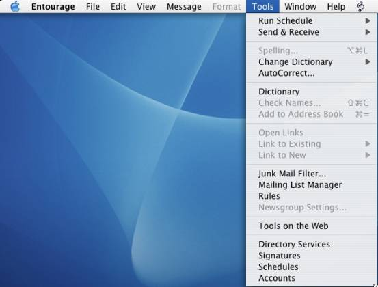
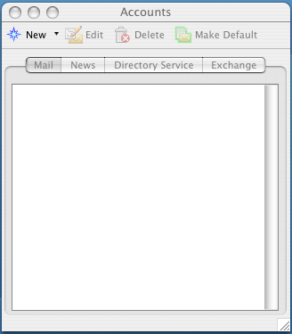
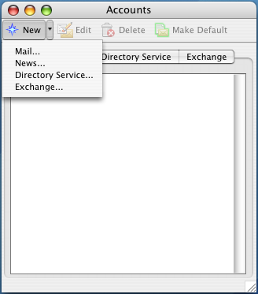
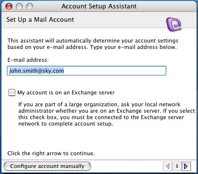
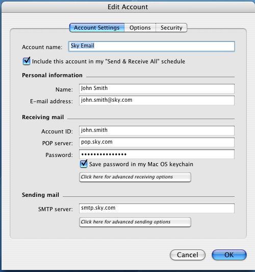
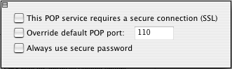
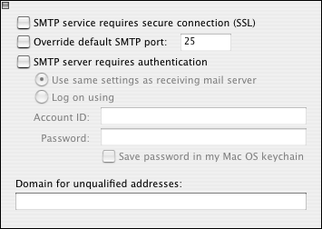
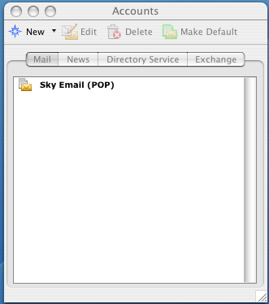

Entourage
Guide to setting up your Sky email in Entourage for Macs (OSX)
-
Open Entourage, click on the Tools menu and select Accounts
 -
The “Accounts” window opens. Click New
 -
Select Mail
 -
Click on the Configure account manually button
 -
In the account name, type a descriptive name for the account, i.e. Sky Email.
Tick the “Include this account in my “Send & Receive All” schedule box.
Type your name in the Name box (will appear as the ‘from’ name on emails you send).
Enter your email address (e.g.: john.smith@sky.com) in lowercase letters, with no spaces, in the E-mail Address box.
In the ‘Account ID’ box enter the first part of your @sky.com email address (everything before the @ sign).
In the “POP server” box, type pop.sky.com (all lowercase, no spaces).
In the Password box, enter the password for your @sky.com email account.
Tick the “Save password in my Mac OS keychain” box if you would like Entourage to remember your password so that you do not need to enter it each time you check for any new email.
In the ‘Outgoing mail server’ box enter: smtp.sky.com (all lowercase, no spaces).
-
Click OK
 -
Click on the “Click here for advanced receiving options” and ensure all the options are as below:
 -
Close the “Advanced receiving options” window by clicking the icon in its top left corner. Click on the “Click here for advanced sending options” and ensure all the options are as below:
 -
Close the “Advanced sending options” window by clicking the icon in its top left corner. Click Done
 -
Close the “Accounts” window